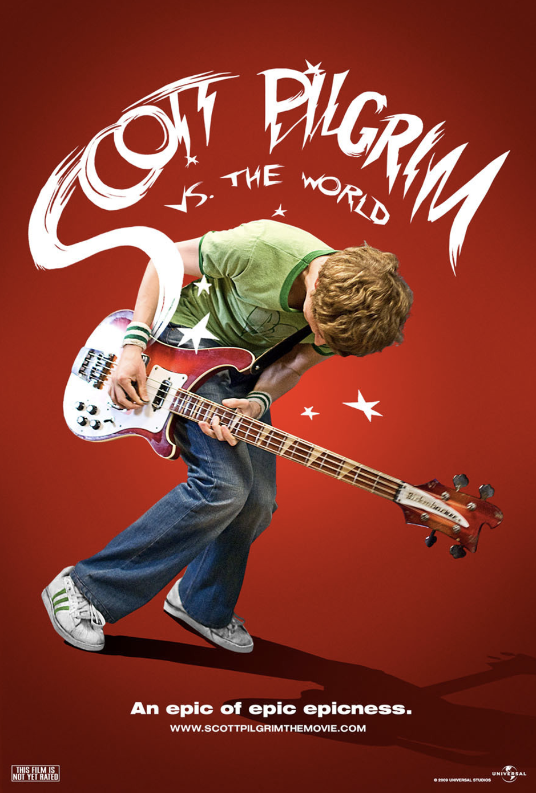

This webpage is all about me. My likes, dislikes, hopes, dreams, and favorite things.
I am currently a Junior in high school. I love chemistry, forensics, and all things music. I am currently enrolled in a program called School of Rock. Through that music program, I have learned many amazing things, and realized that music is my passion. I play the drums, guitar, bass, piano, and I sing as well. I've met great people and made amazing friends through it. At home, I have two cats, Moe and Loki. I live with my mom and dad, who both work in IT. I have an older sister who studies IT and computer science at college.
My friends and band director at School of Rock inspire me so much. Anytime I have a spare moment, I try to practice learning a new song for myself, or for the program so we can perform it at a venue. When I am not practicing, I am playing videogames online. My favorite games are Valorant and League of Legends.
"Your house is not your home. My world is not your world. Your thoughts are your home where you're dwelling." - Ryan Guldemond
| Favorite Flower | Apple Blossom Flower | |
|---|---|---|
| Favorite Weather | Thunderstorms | |
| Favorite Drink | Dr. Pepper |
| Favorite Movie | Scott Pilgrim vs. The World |  |
|---|---|---|
| Favorite Album | "Metropolis Part 2" by Dream Theater | |
| Favorite Son g | "Your Familliar Face" by Native Construct |